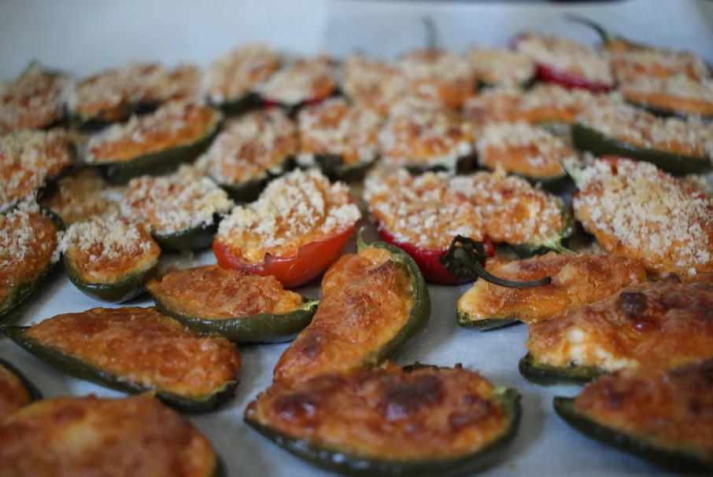

Baked Cream Cheese Jalapeno Poppers

Description
This recipe has all the flavor of jalapeno poppers without having to use a fryer to get the crunch.
This recipe was modified from a recipe from Emeril Lagasse and has 3 easy steps.
Ingredients
- 8 ounces cream cheese, softened
- 1 cup finely shredded Cheddar cheese
- 1 ½ tablespoons taco seasoning mix
- 12 jalapeno peppers, halved lengthwise and seeded
- 2 tablespoons fine bread crumbs, or to taste
Steps
- Preheat oven to 375 degrees F (190 degrees C). Line a baking sheet with foil or parchment paper.
- Blend cream cheese, Cheddar cheese, and taco seasoning together in a bowl; spread into jalapeno halves and arrange onto prepared baking sheet. Sprinkle bread crumbs over the cheese filling.
- Bake until the peppers are just tender, 20 to 30 minutes.